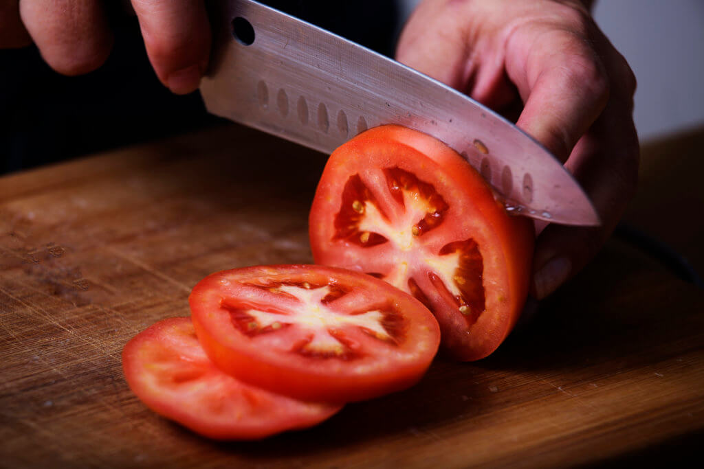

Amanida de tomàquet i enciam
Ingredients
2 tomàquets
Fulles d'enciam
1 cullerada d'oli d'oliva
Sal i pebre
Pas a pas
Tallar els tomàquets.

Preparar les fulles d'enciam.
Barrejar i amanir amb oli, sal i pebre.
Resultat final